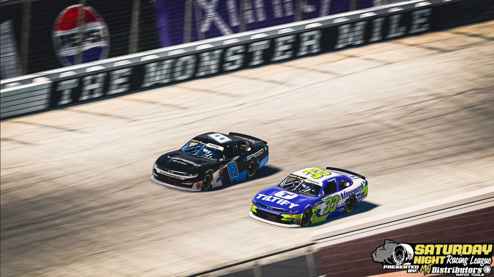

Stravato Makes it Three — Wins at Dover Motor Speedway to Extend Championship Lead

The Saturday Night Racing League Cup Series rolled into Dover Motor Speedway on Saturday Night for Race 11 of 22, and once again it was A.J. Stravato standing in Victory Lane — claiming his third win of the Season 6 campaign and firmly planting his flag atop the championship standings.
In a 180-lap race at The Monster Mile, J R Shepherd set the early pace from the front row, leading a race-high 71 laps in the opening stages of the event. Seth Hatchel, who started from the pole, took over the lead through the middle portions of the race, pacing the field for 65 laps. Brandon Wallace also had a strong showing, leading 6 laps, with Phillip Brewer adding 3 more to his name.
Despite not leading the most laps, Stravato — starting 4th — had the fastest car when it mattered most, taking command for the final 35 laps and never looking back. Polesitter Seth Hatchel crossed the line in 2nd, while Adam Cabot charged from 16th to complete the podium with an impressive 3rd place finish.
Two cautions flew over the 180 laps. The first was triggered by a Chad Clinger incident that collected Ryan Carwile, who suffered an early exit and was scored 33rd. The second yellow flew after Casey Lakatos suffered an internet-related issue that ultimately collected Chad Clinger, ending his night with a 27th place finish.
The win extends Stravato’s championship lead to 423 points — 20 ahead of Bailey Turner (403) and 24 ahead of Kenny Kibbey (399) as the three-way title fight at the top continues to tighten heading into the back half of the season.
The SNR Cup Series continues next Saturday Night. Tune into VSPEED for full live coverage!